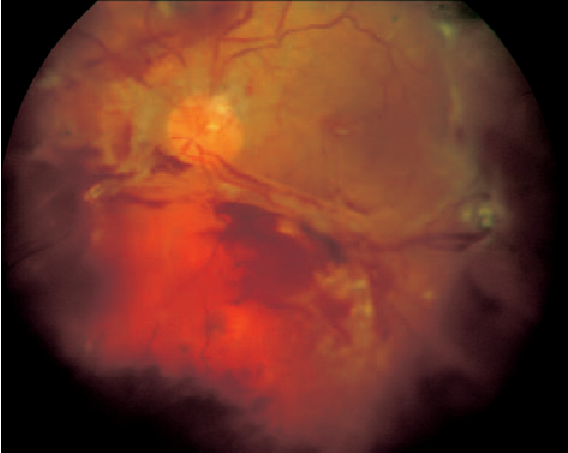
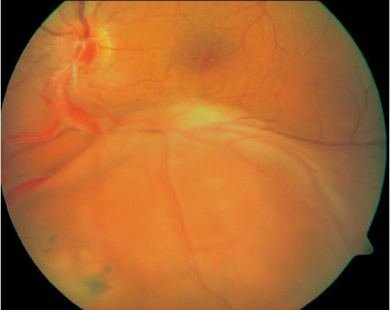

+ Bong võng mạc: là
sự tách lớp võng mạc thần kinh với lớp biểu mô sắc tố võng mạc (RPE) bởi
dịch dưới võng mạc (SRF)
+ Có 2 thể bong võng mạc
- Bong võng mạc
có lỗ rách (Rhegmatogenous RD): xảy ra thứ phát với một khuyết
toàn bộ bề dày lớp võng mạc cảm giác, với tồn tại dai dẳng của dịch dưới
võng mạc bắt nguồn từ dịch kính bị hóa lỏng (synchitic) làm gia tăng
đường dẫn vào khoang dưới võng mạc.
- Bong võng mạc
không có lỗ rách (Non-Rhegmatogenous RD), có thể:
-
Co
kéo, tại vùng mà võng mạc cảm giác bị kéo khỏi
biểu mô sắc tố võng mạc bởi màng võng mạc dịch kính co rúm lại.
Nguồn gốc của dịch dưới võng mạc không rõ ràng. Những nguyên
nhân quan trọng gây bệnh gồm: Bệnh lý võng mạc đái tháo đường
tăng sinh, ROP, bệnh lý võng mạc hồng cầu hình liềm và chấn
thương xuyên bán phần sau.

Hình:
Bong võng mạc ở bệnh lý võng mạc đái tháo đường tăng sinh

Hình: Bong võng mạc
dạng hình phễu ở trẻ ROP

Hình: Bong võng mạc
do co kéo
-
Xuất tiết (thanh dịch, thứ phát), dịch dưới võng
mạc bắt nguồn mao mạch hắc mạc làm gia tăng đường dẫn vào khoang
dưới võng mạc qua lớp biểu mô sắc tố bị tổn thương. Nguyên nhân
gây bệnh quan trọng bao gồm: khối u hắc mạc, u nguyên bào võng
mạc, bệnh Harada, viêm củng mạc sau, tân mạch dưới võng mạc và
bệnh tăng huyết áp trầm trọng.

Hình: Bong võng mạc
xuất tiết phía dưới với hình ảnh bất thường mạch máu
+
Lỗ rách nguyên phát được cho là một phần quan trong của bong võng mạc, cho
dù lỗ rách thứ phát có thể xuất hiện. Xác định lỗ rách là một vấn đề quan
trọng và hỗ trợ cho những suy xét tiếp theo.
+
Sự phân bố của lỗ rách:
- Khoảng 60% là
phần tư thái dương trên
- 15% phần tư mũi
trên
- 15% phần tư thái
dương dưới
- 10% phần tư mũi
dưới
+
Hình dạng của bong võng mạc: dịch dưới võng mạc thường lan ra theo trọng
lực. Dạng bong võng mạc bị chi phối bởi những giới hạn giải phẫu (ora
serrata và đĩa thị) và vị trí lỗ rách nguyên phát. Nếu lỗ rách nguyên phát
nằm ở trên, dịch sẽ theo lực hấp dẫn lan xuống cùng bên và từ từ ngược sang
phía đối diện. Chính vì vậy mà ta có thể đoán được vị trí của lỗ rách bằng
cách phân tích hình dạng bong võng mạc
- Một bong võng
mạc nông phía dưới mà dịch dưới võng mạc ở phía thái dương cao hơn thì
lỗ rách nên tìm ở phía thái dương dưới (hình a)
- Một lỗ rách
nguyên phát ở vị trí 6h sẽ gây nên bong võng mạc có mức dịch dưới võng
mạc cân bằng hai bên (hình b)
- Trong bong võng
mạc dạng khối phồng lên ở phía dưới, lỗ rách thường nằm ở trên kinh
tuyến ngang (hình c)
- Nếu lỗ rách nằm
ở góc phần tư mũi trên dịch dưới võng mạc sẽ quay quanh đĩa thị và rồi
thì tăng lên phía thái dương cho đến khi ngang mức với vị trí rách ban
đầu (hình d)
- Bong gần toàn bộ
võng mạc có một vùng võng mạc chưa bị bong hình chêm ở phía trên chỉ cho
thấy lỗ rách nguyên phát ở ngoại vi cạch bờ cao nhất của vùng võng mạc
này (hình e)
- Khi dịch dưới
võng mạc băng qua đường dọc giữa từ trên xuống, lỗ rách nguyên phát nằm
gần 12h, bờ thấp hơn của diện bong tương ứng với vị trí của lỗ rách
(hình f)

Hình: Mô tả hình thái
của bong võng mạc và vị trí lỗ rách cần tìm